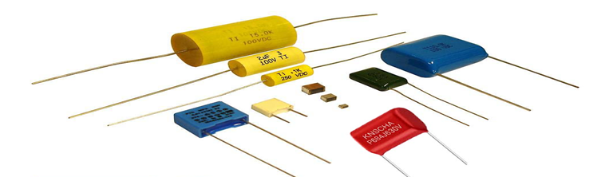
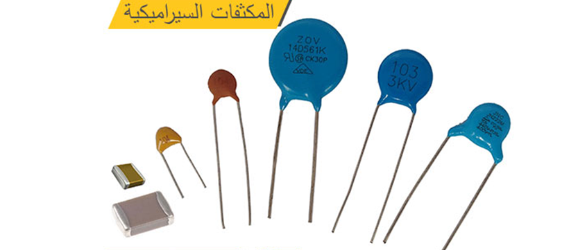
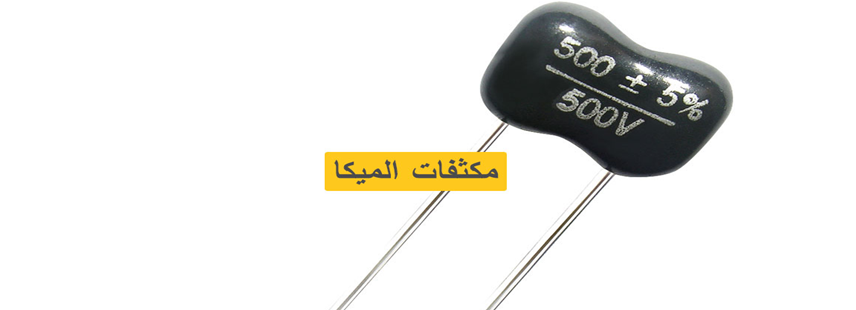

المكثفات الفلمية(Film Capacitors)
يعد هذا النوع من أحد أنواع المكثفات المنتشر في الدوائر الإلكترونية بشكل واسع، حيث يتوفر بأشكال وأحجام مختلفة تختلف حسب نوع العازل، أما بالنسبة لقيمة سعة المكثف الفلمي، فأنه يتراوح بين (100µF-5pF).

المكثفات السيراميكية (Ceramic Capacitors)
خصائصه:
• يتميز بصغر الحجم والاستقرار العالي عند الترددات العالية.
• يعد من المكثفات الغير مستقطبة، (أي ليس له قطبية موجبة وسالبة).
• يصنع في العادة على شكل قرص عدسي.
• تصل قيمة الجهد المقنن لديه إلى قيم معينة.
• قيمة السعة لديه يتراوح بين (1pf-1µF).

مكثفات الميكا (Mica Capacitors)
خصائصه:
• أن المادة العازلة المستخدم بين لوحي المكثف مصنوع من الميكا.
• يعد من أغلى أنواع المكثفات سعراً، بالرغم من أن القيم لديه في نطاق محدود.
• يتميز بدرجة عالية من الاستقرار عند درجات الحرارة المتغيرة.
• يتراوح سعة المكثف ما بين (0.1µF-1pF).
• يستخدم في دوائر الجهد العالي، لما له من ميزة التحمل العالي للجهود.
• يستخدم أيضاَ في دوائر الرنين والفلاتر، وعند الترددات العالية.

المكثفات إلكتروليتية
أنواع المكثفات الإلكتروليتية :
1- مكثفات الألومنيوم إلكتروليتية (Aluminum Electrolytic Capacitors)
خصائصه:
• يصنف من المكثفات المستقطبة.
• يتميز بسعته العالي، والذي يتراوح بين (47.000µF-1µF).
• لا يتوفر بجهود عالية.
• لا يتمتع بدقة عالية.
• لا يستخدم في دوائر التيار المتردد؛ لأنه من النوع المستقطب.
• يستخدم في دوائر التيار المستمر.
مكثفات التانتالوم إلكتروليتية (Tantalum Electrolytic Capacitors)
خصائصه:
• يصنف من المكثفات المستقطبة.
• يتميز بسعات واسعة النطاق، حيث يتراوح بين (470µF-470nF).
• مستقر بشكل أفضل من مكثفات الألومنيوم.
• يستخدم في دوائر التيار المستمر.
• لا يتوفر بجهود عالية.
• نسبه الخطأ لديه تصل إلى 20%.
مكثفات التريمر (Trimmers Capacitors)
وهو نوع آخر من أنواع المكثفات المتغيرة، ويؤدي نفس وظيفة المكثفات الهوائية، ولكن هذا النوع يستخدم لمعايرة معينة في الدائرة، ولا يسمح لأي أحد بتغييرها مرة أخرى، ويصنف من المكثفات الغير مستقطبة.